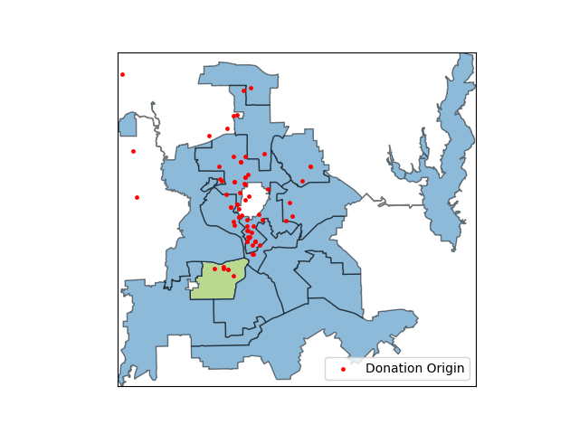
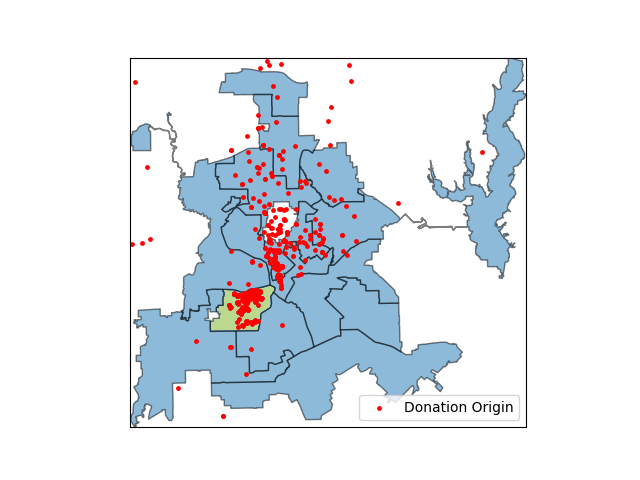
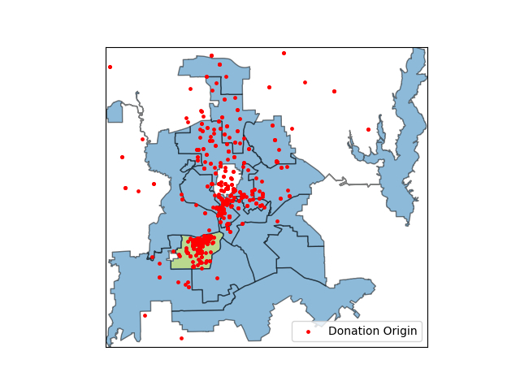
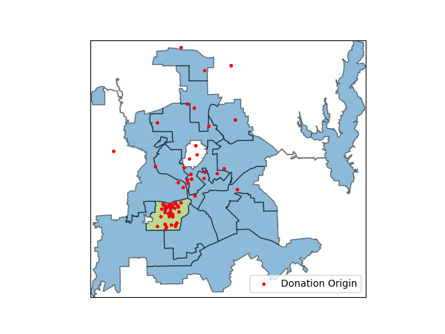

Chad West
City Council - District 1
(Dallas, Texas)
First Election: 2019 | Next Election: 2025
Highlights
Small Donor Support
(Contributions Less than $100)
Big Donor Support
(Contributions of $1000 or More)
External Support (Non-Dallas Contributions)
Contributions Across Dallas
District 1 highlighted in green
Filter by Election Cycle:
2023-2025
2021-2023
2019-2021
2017-2019
   
Individual Contributions Breakdown
Filter by Election Cycle:
All Data
2017 - 2019
2019-2021
2021-2023
2023-2025
Aggregated Contributions
Contributions made by the same person have been grouped together.
Filter by Election Cycle:
All Data
2017 - 2019
2019-2021
2021-2023
2023-2025
Individual Contributions
Filter by Election Cycle:
All Data
2017 - 2019
2019-2021
2021-2023
2023-2025
Download CSV